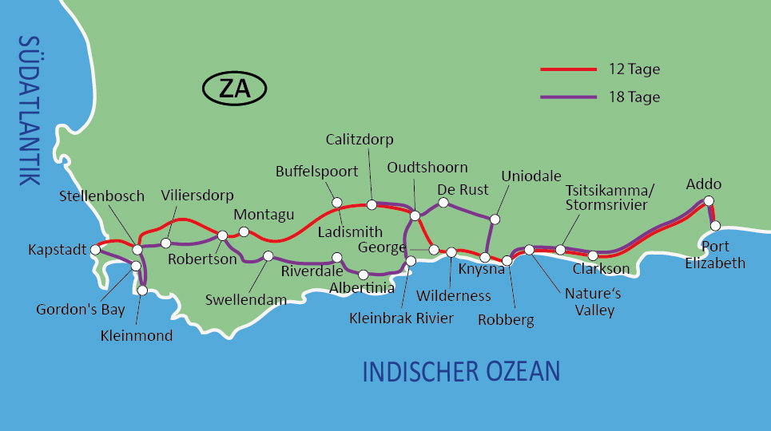

Ein unvergessliches Küstenabenteuer entlang Südafrikas berühmtester Straße
Die Garden Route zählt zu den schönsten Reiserouten der Welt. Auf über 300 Kilometern erwartet dich eine faszinierende Kombination aus zerklüfteter Küste, dichten Wäldern, traumhaften Stränden und charmanten Städten.
Unsere sechstägige Tour führt dich von Mossel Bay bis nach Tsitsikamma – mit Stopps in Knysna, Plettenberg Bay und Wilderness. Ein Erlebnis für Naturfreunde, Entdecker und Genießer.
Dauer: 6 Tage
Schwierigkeit: Mittel
Transport: Komfortabler Minibus
Unterkunft: Mittelklasse-Lodges & Gästehäuser
Die Route führt dich entlang der südafrikanischen Küste – von Mossel Bay über Knysna bis zum Tsitsikamma Nationalpark. So bekommst du einen Überblick über die wichtigsten Stationen deines Abenteuers:
